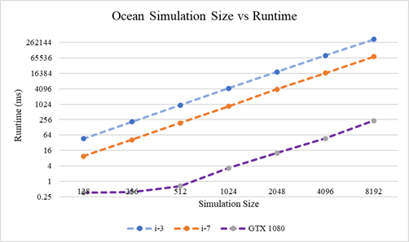

Ocean Simulation
In addition to studying computer graphics & rendering, I really enjoy simulating water. I have simulated small bodies of water using Eularian and Langragian simulations, but I decided to aim for something much larger as a final project in the course Applied Parallel Programming. The result is a massively parallel ocean simulation using CUDA and OpenGL.
Overview
The ocean simulation implemented in this project was first introduced by Tessendorf in [1] and has been used in major films such as The Titanic ([1]) and Moana ([3]). At a glance, the simulation models ocean waves by representing a large body of water as a 2W x 2H grid of sinusoidal wave functions, each which describes the ocean amplitude at a grid cell. At each simulation timestep, the wave functions disperse energy (i.e water) between the grid points, then uses a 2D Inverse Fourier Transform to convert the ocean grid into a heightmap which describes the ocean wave height at each grid cell.
The simulation has 3 main phases:
Generate Initial Ocean Spectrum

Update Ocean wave amplitudes

Use the FFT to extract the Ocean Heightmap
Stage 1: Initialize
As is the case with all simulations, the first step is to initialize. For the ocean simulation, the only data which must be initialized is the initial ocean grid, h0. Each grid cell must be assigned an initial frequency, a process which takes O(WH) time. This task is embarrassingly parallel; each cell only requires a 2D Gaussian random number and a few simulation parameters such as windspeed, wind direction, and gravity. Due to its reliance on random numbers, which are difficult to calculate on the GPU, this stage is completed on the host serially. It is also worth mentioning that h0 is a Hermitian function, a property which will prove useful in future steps. Once completed, h0 is transferred to the GPU, where the remainder of the simulation is completed.
Stage 2: Update Ocean Frequencies
For every simulation timestep, we must calculate how the ocean waves move. This is accomplished by calculating the dispersion of energy between grid cells; some energy flows outwards to adjacent cells and some flows inwards from neighboring cells. Given a grid coordinate k⃗=(x,y) and simulation time t, the energy in the grid cell is:

This formula only requires grid cells from the initial heightmap, which makes the computation embarrassingly parallel. The value of h0*, the conjugate wave heightfield, can be obtained from h0 using properties of Hermitian functions.
In addition to calculating the wave's vertical height, there are several optional values we calculate to improve the simulation's fidelity. h(k⃗,t) only models the wave's vertical displacement, but it is also possible to model the wave's horizontal displacements using the choppy wave equations, Cx and Cy:
Each choppy wave equation will require a separate ocean grid to record the displacement for Cx and Cy respectively. As a result, there are actually 3 separate ocean grids which require updating in stages 2 & 3.
Stage 3: Create Heightmap
The final phase of the simulation algorithm is to transform the grid cell values calculated in stage 2 to the time domain. This is accomplished using a 2D Inverse Fourier Transform (IFT). This algorithm has a computational complexity of O(W2 * H2). This complexity is far too expensive, even when executed on the GPU in parallel, so we make a number of optimizations to reduce the complexity. Firstly, we use the dimensionality property of Fourier Transforms to decompose the 2D IFT into series of 1D IFTs. Instead of performing the 2D IFT, we first perform the 1D IFT along all the columns, then perform it along all the transformed rows. Doing so reduces the computational complexity to O(W*H2 + H*W2). Parallelizing the 2D FFT now simply requires parallelizing the 1D FFT. For details on how this was accomplished, please see my full report included with the project code.
Results: Performance
The average time elapsed for a completing Stages 2 & 3 of the simulation on various square grid sizes are shown below. The parallel CUDA implementation was run on an NVidia GTX 1080 GPU and the serial version was run on both an Intel i3 & Intel i7-8750H processors. In total, the parallel version is approximately 1300 times faster than the i3 and 300 times faster than the i7.
Results: Visualization
To visualize the Ocean simulation, I created an OpenGL application which uses instanced rendering and a tesselation shader to generate a large Ocean mesh. For real time parameter tuning, I used the Dear ImGui Library to create a simple gui. All the parameters are described in Empirical Directional Wave Spectra for Computer Graphics by Christopher Horvath.

For lighting & shading, we also need a normal map to describe the normal vector at each grid location. The normal map can computed by dispersing enegry along the partial derivatives of the ocean grid w.r.t the x, y, and z directions. This in turn requires updating & performing the 2D FFT for 3 additional grids.
Ocean Height map (for vertex displacement)

Ocean Normal map (for vertex lighting)
Currently, the biggest limitation with this visualization is the fact that fetching the ocean heightmaps from the CUDA context and transferring them to the OpenGL context for visualization wastes a lot of time. A better visualization would rewrite all the CUDA simulation code as GLSL compute shaders, so the heightmap textures would already be available for rendering. I plan to make this improvement when I finish setting up the compute stages in my Vulkan Real-time Renderer.
Code
The project source code and report can be found on my personal GitHub repository here
References
[1] Tessendorf, J. 2001. Simulating Ocean Water. SIG-GRAPH (1999), Course Notes.
[2] Gamper, T. 2018. Ocean Surface Generation and Rendering. Master's Thesis. Vienna University of Technology, the Faculty of Informatics.
[3] Sean Palmer, Jonathan Garcia, Sara Drakeley, Patrick Kelly, and Ralf Habel. 2017. The ocean and water pipeline of Disney's Moana. In ACM SIGGRAPH 2017 Talks (SIGGRAPH '17). Association for Computing Machinery, New York, NY, USA, Article 29, 1-2. https://doi.org/10.1145/3084363.3085067
[4] Christopher J. Horvath. 2015. Empirical directional wave spectra for computer graphics. In Proceedings of the 2015 Symposium on Digital Production (DigiPro '15). Association for Computing Machinery, New York, NY, USA, 29-39. https://doi.org/10.1145/2791261.2791267